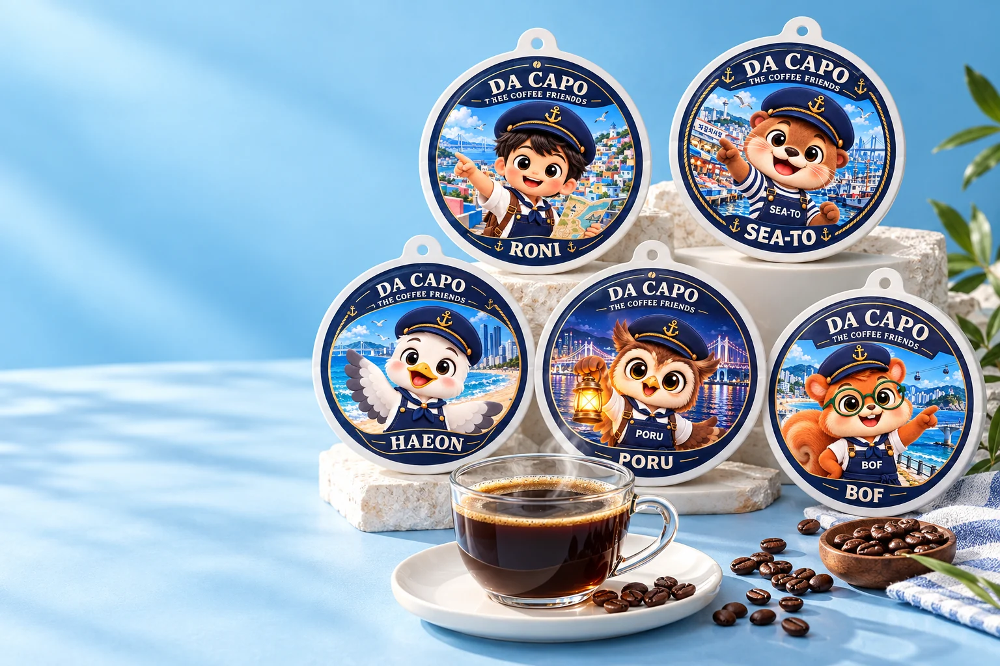
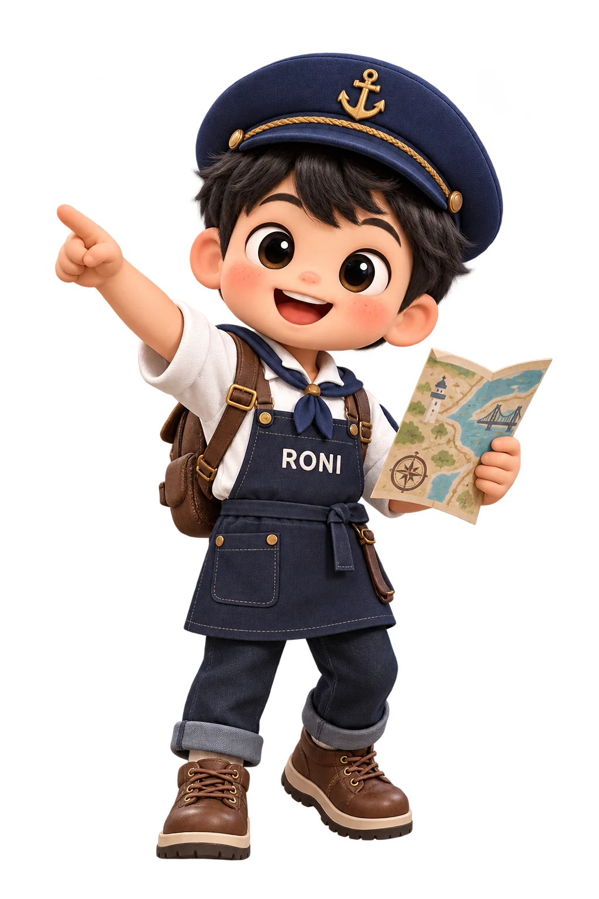
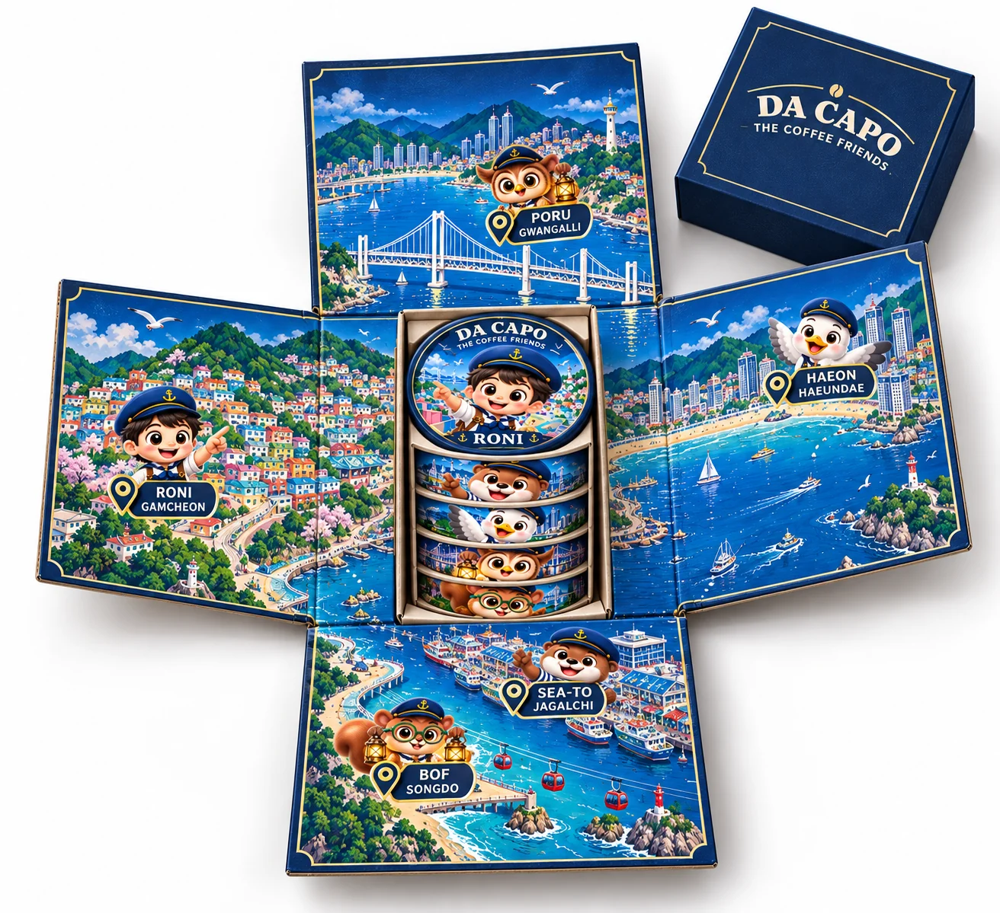

A LITTLE TRIP, IN EVERY CUP.
다 카포 핸드드립팩더 커피 프랜즈
Five Friends, Five Stops,
One Busan Journey.
골목의 설렘부터 반짝이는 밤바다까지.
다섯 친구와 함께 부산의 순간을 펼쳐보세요.
FIVE FRIENDS. ONE COLLECTION.
한 팩에는 한 친구,
다섯 팩에는 부산의 다섯 풍경.
각자의 장소에서 기다리던 친구들이 한자리에 모였습니다.
마음에 남는 풍경을 고르고, 나만의 커피 시간을 시작하세요.
오늘은 누구와 떠날까요?
THE FIVE FRIENDS / 01—05MEET YOUR BUSAN GUIDES
우리가 안내할게요, 부산.
다섯 장소, 다섯 가지 성격.
친구를 고르면 이야기가 이어집니다.

01 / 05감천문화마을 · RONI
“우리의 여행은
이 골목에서 시작해!”
알록달록한 집 사이, 작은 골목마다 새로운 이야기가 숨어 있어요. 여행을 이끄는 탐험가 로니와 함께 부산의 색과 문화예술을 발견해 보세요.
골목을 나서면, 씨토가 기다리는 활기찬 시장으로.
캐릭터의 장소와 성격을 바탕으로 구성한 여행 이야기입니다.
UNBOX A LITTLE BUSAN
상자를 펼치면,
부산이 펼쳐집니다.
접으면 하나의 선물.
펼치면 다섯 친구의 여행 지도.

작은 상자에 모인 다섯 친구
원형 팩을 층층이 담은 정육면체 수납 구조.
안쪽 면으로 이어지는 지도
감천문화마을, 자갈치시장, 송도, 해운대, 광안리의 이야기를 펼쳐보세요.
여행이 끝나도 남는 부산
커피를 고를 때마다, 좋아하는 풍경을 다시 만나는 시간.
BACK TO A GOOD CUP.
여행의 속도를 낮추는
커피 한 잔.
다 카포(Da capo), 처음으로 돌아간다는 뜻.
풍경을 고르는 설렘 뒤에는 커피를 내리는 작은 여유가 기다립니다.
- 다섯 개의 디자인
- 친구마다 다른 부산의 풍경을 담았습니다.
- 나만의 커피 시간
- 집에서도, 사무실에서도 여행의 장면을 떠올려 보세요.
캐릭터별 원두·풍미·중량 및 필터 사양은 확정 후 안내됩니다. 다섯 디자인이 서로 다른 맛을 의미하지는 않습니다.
YOUR DAILY COFFEE MOMENT
한 잔을 준비하는 작은 순서.
- 01
열고
포장을 열고 필터를 컵에 안정적으로 올립니다.
- 02
기다리고
물을 한 차례 부은 뒤, 커피가 젖도록 잠시 기다립니다.
- 03
천천히 내리고
물을 나누어 부으며 커피를 추출합니다.
- 04
나답게 즐기기
취향에 따라 물이나 얼음을 더합니다.
기존 다카포 제품의 사용 흐름을 참고했습니다. 최종 제품의 물 양·온도·시간은 포장 안내를 따라주세요.
TAKE A LITTLE BUSAN WITH YOU.
부산의 다섯 순간을,
누군가의 일상으로.
개별 상품과 기업·기관 선물 문의는
부산커피협동조합을 통해 확인해 주세요.
상품 및 시안 안내
이 페이지의 캐릭터·포장·연출 이미지는 촬영 자료를 참고한 AI 생성 콘셉트입니다. 실제 상품과 다를 수 있습니다. 판매 가격, 구성 수량, 배송, 맞춤 제작 조건은 기업 확인 후 확정됩니다. 지도는 관광 이야기용 일러스트입니다.